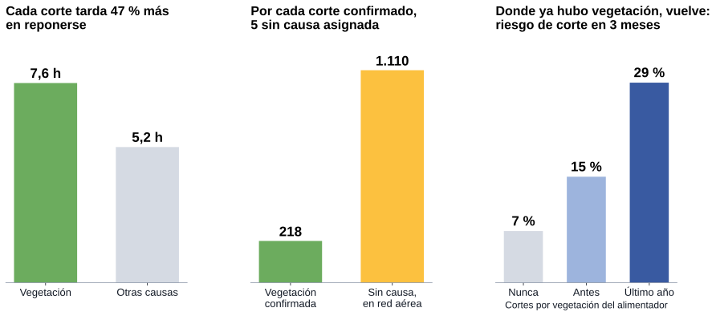
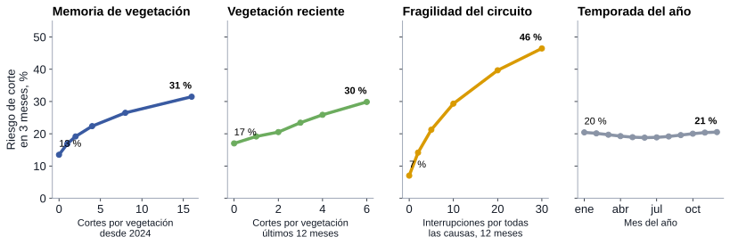
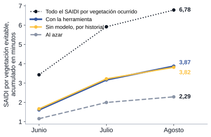
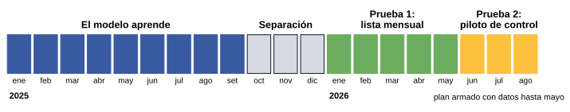
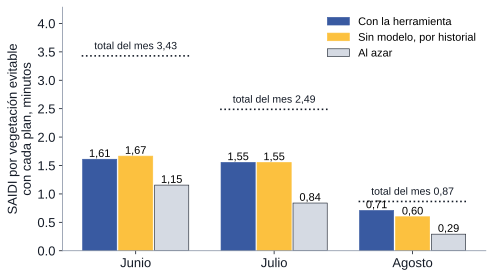

Poda priorizada por riesgo de vegetación
Hallazgos, solución, demo y beneficios
César Eduardo Pajuelo Reyes
Angello Giovani Soldi Cataño
Josué Nehemías Velo Poma
Paolo Medrano Terán
Pluz Energía y UTEC · noviembre de 2026

Equipo del proyecto
Coordinador Mantenimiento Distribución
Planificación de mantenimiento
Usuario clave
Contratistas: Dominion, Cobra, Lari y PA
Ejecutan la poda
Centro de control y operaciones
Usa el resultado
Lo que encontramos en los datos

Cómo funciona la solución
SAIDI
Clientes
Cómo decide el modelo
Riesgo de un alimentador típico al mover una sola señal

- Más interrupciones o más cortes por vegetación: siempre más riesgo.
- La temporada casi no cambia el riesgo en Lima.
Demo: la herramienta en un minuto y medio
 Escanee para abrirlaSin instalar nada
Escanee para abrirlaSin instalar nada
Beneficio: 57 % del SAIDI por vegetación era evitable
Plan de mayo frente a lo ocurrido de junio a agosto

Supera al azar en 6 de los 8 distritos
Porcentaje del SAIDI por vegetación que el plan habría podido evitar

- Ventanilla 77 %, San Juan de Lurigancho 68 %, Callao 59 %.
- Los Olivos casi sin cortes en esos meses: 74 % de enero a mayo.
Avance y próximos pasos
Marcar cada poda
preventiva o correctiva
Validar en campo
un trimestre con la lista
Bajar al tramo
con el maestro de estructuras
Operar en Pluz
en sus instalaciones
Gracias
Preguntas y comentarios
¿Y si solo usamos la regla por historial?
La regla por historial
Ordena los alimentadores por sus cortes por vegetación del último año y desempata con los de 2024 en adelante. Es lo que se haría con una hoja de cálculo.
- Donde difieren, empatan: 0,59 frente a 0,53 min de SAIDI.
- Ninguno llega al resto: 1,47 min (22 %) en alimentadores sin cortes por vegetación en el último año.
Pondera el impacto
SAIDI, clientes y tiempo sin poda, no solo cortes.
Da una probabilidad
Calibrada y auditada cada semana.
Se vigila sola
Compara su orden con la regla y avisa.
Puede crecer
Con poda preventiva o correctiva y causas reetiquetadas.
Cómo se separaron los datos
Entrenamiento, separación y prueba, sin mirar el futuro

- Objetivo: al menos un corte por vegetación, o sin causa en red aérea, en los 3 meses siguientes, por alimentador.
- Entrenamiento con 2025; tres meses de separación para que ninguna ventana se cruce con la prueba.
- Prueba 1: enero a mayo de 2026, mes a mes. Prueba 2: plan de mayo frente a junio a agosto.
Benchmark: ocho modelos con los mismos datos

- Ninguno supera a la regresión logística en PR AUC.
- Se queda la más simple: calibrada y explicable.
- Frente a la regla, a la par: el techo está en los datos.
Piloto de control mes a mes
SAIDI por vegetación evitable con el plan de mayo, 8 distritos

- Supera al azar en los tres meses.
- Frente a la regla: gana en agosto, empata en julio, pierde por poco en junio.
- Agosto llega al día 20.